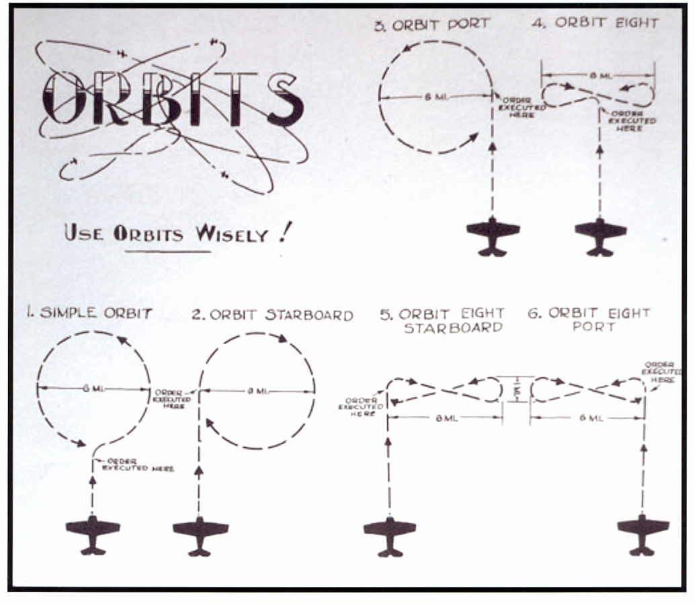
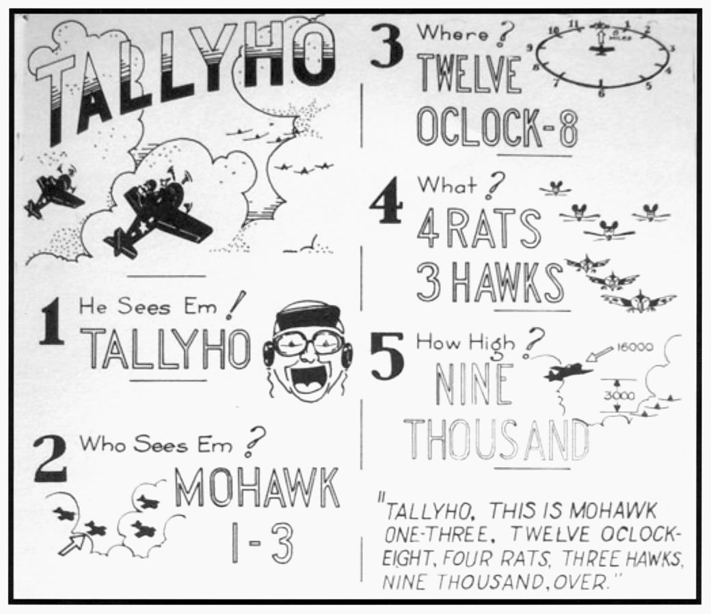

레이더 개발 이야기 (51) - 관제사가 항상 차분한 이유
게시: 2023-10-19T06:30:51+09:00
<가장 좋은 경험은 직접 겪지 않은 경험> 미국이 레이더 자체는 영국과는 별도로 독자 개발했다고 하더라도, 이 레이더라는 물건을 함대 방공에 있어서 어떻게 활용하는 것이 가장 좋은가라는 점에서는 미해군은 철저하게 로열 네이비의 규범을 거의 그대로 받아들임. 로열 네이비가 노르웨이 등지에서 피를 흘려가며 레이더 활용법을 터득했기 때문에, 그보다 더 나은 전술은 더 없다고 보았기 떄문. 어떤 규범은 상식적인 것이었지만 어떤 것들은 실전 경험이 아니면 획득하기 어려운 것들이었음. 문답식으로 몇 개를 제시하면 다음과 같음. Q1) 각각 20대씩으로 편성된 3개 적편대가 각각 다른 방향에서 아군 함대를 노리고 날아들고 있다. 아군 전투기는 30대 뿐이다. 다음 중 어떤 요격 방식이 가장 유리할까? Option 1) 선택과 집중이 중요하므로 아군 전투기 30대로 1개 편대를 만들어 각 방향의 편대들을 순차적으로 하나씩 때려잡는다. Option 2) 어느 하나의 편대라도 훼방 받지 않고 아군 함대에 도달하게 만들어서는 안 되므로 아군 전투기도 10대씩 3개 편대를 만들어 각각의 적 편대를 향해 내보낸다. --> 정답은 2번. 비록 2~3대뿐이라고 해도 요격기가 막아서면 공격기들은 큰 위협을 느끼게 되므로 주목적인 함대 폭격에 성공할 가능성이 떨어진다. Q2) 레이더로 파악된 적의 공격 편대를 함대로부터 어떤 위치에서 요격하는 것이 좋을까? Option 1) 당연히 가장 먼 곳에서 요격해야 함. 가장 멀리서 요격해야 요격 기회가 두 번 세 번 생길 수 있기 때문. Option 2) 공격기의 속도도 매우 빠르기 때문에 어차피 요격 기회는 단 1번. 이 기회를 최대한 살리기 위해 아군 함대의 대공포와 협력해야 하므로 최대한 가까이 끌어들인 후 요격해야 한다. Option 3) 멀리서 요격하는 것이 좋지만 아군 함재기들의 연료 및 탄약 재보급을 고려해야 하므로 최대 탐지 거리와 아군 함대의 중간 지점에서 요격해야 함. --> 정답은 1번. 이건 그냥 상식. Q3) 적 편대를 요격할 때 아군 함재 전투기는 어떤 식으로 편대를 이루어야 할까? Option 1) 최대한 많은 요격 기회를 갖기 위해서는 편대를 이루려 시간 낭비하지 말고 이함하는 순서대로, 또 이미 상공에 떠있다면 떠 있는 순서대로 즉각 공격한다. Option 2) 하나의 큰 편대를 만들어 한꺼번에 격돌하는 것이 가장 효율적이다. Option 3) 먼저 적 편대의 전투기들과 폭격기들을 헝클어 놓은 뒤 각개격파 하는 것이 좋으므로 요격기는 제1파와 제2파로 나누어 돌격한다. --> 정답은 2번. 언제나 싸움판의 최고 기술은 '머리수로 다구리' Q4) 레이더 상에 저 멀리 홀로 날고 있는 미확인 항공기가 발견되었다. 이에 대해 취할 조치는? Option 1) 저쪽이 우리를 보지 못했는데 괜히 요격을 시도할 경우 아군 함대의 위치가 발각될 수 있으므로 일단 적기의 거동을 지켜 본다. Option 2) 아군 함대를 향해 똑바로 날아오더라도 혹시 아군일 수도 있고, 그때마다 요격을 위해 출격한다면 함재기의 연료 소모와 조종사의 피로 심화가 우려되므로 먼저 암호로 무선통신을 시도한다. Option 3) 당연히 무조건 즉각 요격하여 육안으로 확인하고 적기라면 요격한다. --> 정답은 3번. 적기는 바보가 아니라고 가정하는 것이 언제나 안전. <어떤 각도가 좋을까?> 레이더를 이용하여 요격기를 지휘하면 좋은 점이 적기가 우리를 보기 전에 우리가 적기를 볼 수 있으므로 적 편대에 아군 요격기 편대가 접근하는 경로를 우리 측 마음대로 정할 수 있다는 것. 그런데 적 편대를 덮칠 때 어떤 각도로 덮치는 것이 좋을까? 로열 네이비의 경험에 근거하여 미해군 함재기 관제사 학교에서 가르친 내용은 '닥치고 정면충돌'. 적기의 고도도 미리 알 수 있고 특히 하늘에 구름이 군데군데 끼어 있을 경우 대형 편대끼리의 대결에서는 그냥 요격기가 'head-on intercept', 즉 정면에서 덮치는 것이 제일 좋다는 것. 그런데 또 완전 정면, 그러니까 12시 방향에서 덮치는 것보다는 약간 삐딱하게, 그러니까 11시 방향이나 1시 방향에서 덮치는 것이 가장 효과적이었다고. 그런데 꼭 언제나 그런 것은 아니었고, 레이더 정보가 그다지 깨끗하지 않은 상태라면 적 편대의 앞쪽에서 아군 요격기들이 뱅글뱅글 돌며 적기를 기다리는 'orbit and wait' 전법을 쓰는 것이 더 낫다고 가르침.

(적 편대를 기다리며 뱅글뱅글 도는 방법에도 여러가지가 존재. 여러 대가 편대를 지어 돌 때도 일제히 같은 방향으로 도는 것도 아니고 적기를 발견할 확률을 높이기 위해 각자 정해진 방향으로 선회. 일반적으로는 이 그림 중 4번, 즉 '8자 궤도'를 도는 것이 가장 좋다고 가르침. 이유는 선회할 때 언제 나타날지 모르는 적기에게 등을 보이는 순간이 가장 짧기 때문.) <차분하게, 언제나 차분하게> 레이더를 이용하여 수십 km 밖의 전투기들을 통제하려면 무엇보다 통신이 명확하게 이루어져야 함. 유일한 통신 수단은 그냥 무전기. 미해군 전투기 관제사 학교에서는 효과적인 통신을 위해 여러가지를 가르쳤는데, 가장 강조한 것은 '메시지는 간결하고 명확하게, 그리고 목소리는 차분하고 자신감 넘치게'. 영국 공군 및 해군과 마찬가지로, 미해군에서도 요격기 편대장이 'Tallyho'를 외치기 전까지 모든 전투기는 레이더 관제사의 엄격한 통제에 따라야 했음. 그렇게 저 멀리 떨어진 항공모함 레이더실에서 안전하고 편안하게 앉아있는 관제사의 명령에 따르는 것은 전투기 조종사들에게는 자존심도 상하지만 무엇보다 그 지시에 신뢰가 잘 가지 않을 수도 있는 일. 그래서 관제사 학교에서는 조종사들에게 신뢰감을 주어야 한다고 가르쳤고, 그래서 언제나 명확한 용어로, 아무리 긴박한 상황이라고 하더라도 반드시 차분한 목소리로 말하라고 가르침. 긴박한 상황이라고 목소리도 절박한 톤으로 이야기해서는 안 되는 것이, 듣는 조종사들에게 신뢰를 주지 못할 수도 있을 뿐만 아니라 흥분한 목소리는 치칙거리는 무전기에서 명확하게 알아들을 수 없는 경우까지 생기기 때문. 그런 무선 통신 지침 중 몇 가지를 적으면 다음과 같음, - 메시지를 말하기 전에 반드시 전체 문장을 작문한 뒤에 메시지를 말하라. 말하는 와중에 다음 문장에서 무슨 단어를 쓸지 생각해서는 안된다. - 말하기 전에 먼저 들어라. 조종사가 말을 마친 뒤에도 다른 조종사가 혹시 말하려는 것이 있는지 2~3초 기다려라. - 항상 완성된 문장을 끝까지 말하라. 대충 말하다 도중에 끊지 말라. 도중에 끊어진 문장처럼 신뢰감을 저해하는 것이 없다. - 메시지는 항상 최대한 짧게 작문하라.

(편대장이 적기를 발견하면 'Tallyho!'를 외치고 전투에 돌입하는데, 그때부터는 레이더 관제사의 통제에서 벗어나 마음대로 움직일 수 있음. 그러나 탤리호!를 외치고 끝이 아니라 탤리호를 외친 뒤에 '누가 무엇을 어디에서 몇 대나 어느 높이에서 보았는지'를 반드시 순서대로 정해진 용어로 보고해야 함. 보통 여러 편대가 여러 방향으로 날고 있으므로, 탤리호를 외친 것이 1번 편대인지 3번 편대인지 목소리만으로 구분할 수는 없기 때문. 그리고 적 편대가 전투기(rat)로 구성되어 있는지 폭격기(hawk)로 구성되어 있는지도 알려줘야 함.)